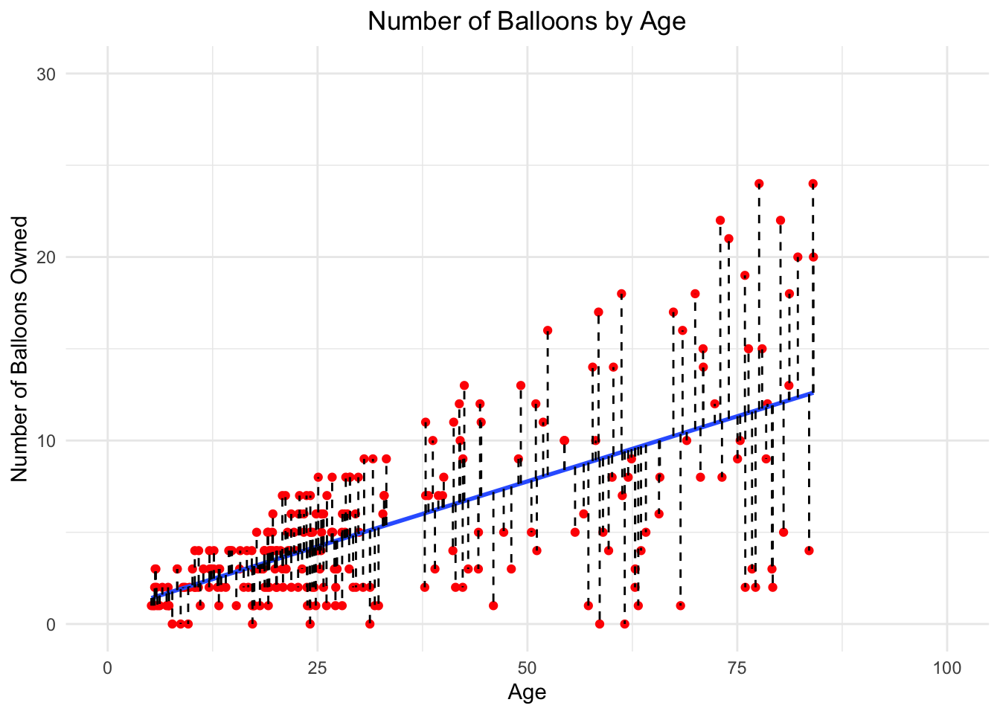

Regression is a commonly used tool in inferential statistics to build a model to make inferences about a super-population. Before we start however, I’d like to highlight that regression is not always necessary or even the best approach. For example, sometimes descriptive statistics are a more appropriate tool. With that being said, regression is a key tool in a statistician’s toolbox. Before we get started, I’d like to revisit one of my favorite quotes by George Box, a British statistician: “All models are wrong, some are useful”.
With this in mind, let’s get started! The real question is where should we start? Typically, most courses start with ordinary least squares (OLS) regression. Seems like a reasonable place to me to begin as well! However, we will back up a little bit and start with the equation of a line.
Equation of a Line
From high school math, you probably remember the equation of a line as
\[
y = mx +b
\]
where \(y\) is the dependent variable, \(m\) is the slope of the line, \(x\) is the independent variable and \(b\) is the y-intercept. A key exercise that is often used in math, using graph paper, is to first plot data points based on their coordinates (x, y), then draw a line of best fit through them. Once you draw the line, you can calculate the slope and extend the line through the y-intercept. This gives you the equation of your line which you can use to predict values of y! When drawing the line of best first, the goal is to capture as many data points on the line as possible, or closest to the line. OLS regression is similar to this.
Plain Old Ordinary Regression
OLS regression tries to minimize the sum of squares of the differences between the observed variable and those predicted by the model (hence the least squares). Put another way: by minimizing the residuals. A way to conceptualize this is by drawing the line of best fit.
For example, imagine we have a database that we can use to ask a burning question we have: Does a person’s age effect the number of balloons they own? Now, if we draw a line of best fit through the data, using number of balloons as the outcome/y/dependent variable, and age as the predictor/x/independent variable… we get the figure below.
Code
set.seed(2228) # August 28, 2022library(tidyverse)library(ggxmean)n.id =250df <-data.frame(age =runif(n = n.id, min =c(5, 18), max =c(30, 85)),sex =rbinom(n = n.id, size =1, prob =c(0.60,0.20)),candy_lover =rbinom(n = n.id, size =1, prob =c(0.64, 0.45)),# Beta Coefficientsbeta_age =runif(n = n.id, min =0, max =0.10),beta_sex =runif(n = n.id, min =0, max =0.30),beta_candy =runif(n = n.id, min =0, max =0.40)) %>% dplyr::mutate(num_ballons =round((beta_age*age + beta_sex*sex + beta_candy*candy_lover)*3,0) # number of ballons that you own )ggplot2::ggplot(data = df, mapping =aes(x = age, y = num_ballons)) + ggplot2::geom_point(color ="red") +geom_lm() + ggxmean::geom_lm_residuals(linetype ="dashed") +labs(x ="Age", y ="Number of Balloons Owned") +theme_minimal() +ggtitle("Number of Balloons by Age") +scale_x_continuous(limits =c(0, 100)) +scale_y_continuous(limits =c(0, 30)) +theme(plot.title =element_text(hjust =0.5))

Let’s break down this figure into digestible chunks. First, let’s focus on the distance from the red dot to the blue line for each data point. This measurement is from the observed value (red dot) to the predicted value (point on the blue line). This is also known as the residual; in the figure, the dashed black line. By drawing the line of best fit, we are aiming to minimize the residuals. Once we have that, we can determine the equation of the line and predict some values!
Of course, this is great in theory to draw the line of best fit, however it can get more complicated when there are additional variables we’d like to adjust for. There are two extra variables in our database that we think could be important: sex and candy lover (yes/no). We may want to adjust for whether a person loves candy or not since candy buyers tend to buy more balloons. Furthermore, we may also want to adjust for sex. How do we draw a line of best fit for all of these? The simple answer is we don’t. A more useful approach is to use a mathematical equation.
Using Equations and Matrices
First, we need to expand our equation to align with our research question
Now we need to estimate the parameters (i.e., \(\beta_1\), \(\beta_2\), \(\beta_3\)). Instead of drawing a line, we can find the estimated values of the parameters using the below equation. Note that these variables are referring to the matrix, rather than a specific variable.
\[
\hat{\beta} = (X^TX)^{-1}X^Ty
\]
where \(\hat{\beta}\) is the ordinary least squares estimator, \(X\) is the matrix containing the predictor variables and \(y\) is the vector of the response variable. For our example, \(X\) is the matrix containing the values of an intercept and values for the following variables: age, sex and candy lover.
Note
For those not familiar with linear algebra, the superscript T is called the transpose. Similarly, the -1 superscript is referred to as the inverse of a matrix.
Abstract concepts can be helpful however an example using data is always better. Using our data from before on balloons and age, we can create our matrix of predictors, \(X\). In our matrix, we will also include a column of all 1s to reflect the intercept. Looking at the first six individuals, we get a sense of what the matrix looks like.
Code
X =as.matrix(cbind(1, df$age, df$sex, df$candy_lover)) X.df = X %>%as.data.frame() colnames(X.df) =c("intercept", "age", "sex", "candy lover")head(X.df)
As you can see, the first column for the intercept is all 1s. The second is the value for age, third is sex (1 = female, 0 = male) and fourth is the value for candy lover (1 = yes, 0 = no). Similarly, for the \(y\) matrix
Code
y =as.matrix(df$num_ballons)y.df = y %>%as.data.frame()colnames(y.df) <-c("number of ballons owned")head(y.df)
number of ballons owned
1 2
2 10
3 2
4 12
5 6
6 2
We can see that the \(y\) matrix is just the values for the outcome of interest. Now, how do we estimate the parameters? For that, we turn back to our handy dandy formula.
Estimating Parameters
Remember our formula from before? If you don’t, no problem I will add it below again just for good measure. Using our handy dandy formula and plugging in our matrices
\[
\hat{\beta} = (X^TX)^{-1}X^Ty
\]
Code
# Doing it step by step:step.1<-t(X)%*%Xstep.2<-solve(step.1) # solve will return the inverse of astep.3<- step.2%*%t(X)step.4<- step.3%*%ybeta <- step.4# Alternatively, can do in one messy looking code: beta <-solve(t(X)%*%X)%*%t(X)%*%y# credit to https://economictheoryblog.com/2016/02/20/rebuild-ols-estimator-manually-in-r/ for the code all in onebeta %>%as.data.frame() %>% dplyr::mutate(variable =c("intercept", "age", "sex", "candy lover") ) %>% dplyr::rename(estimate = V1 ) %>% dplyr::select( variable, estimate )
variable estimate
1 intercept 0.09488954
2 age 0.14316794
3 sex -0.09891130
4 candy lover 0.96749456
Great Scott! We have some results! The estimates are great but you may be wondering, “what about that standard error tho?” If you were thinking that, great point! First, we’ll need to get the variance from the variance-covariance matrix. How can we determine this variance-covariance matrix? Another formula!
Estimating Variance
In order to calculate the variance-covariance matrix, we first the residuals. We can do that using the below formula (how many times have I said formula so far in the post?)
Once we know the residuals, we can calculate the variance-covariance matrix as
\[
VCov = \frac{1}{n-k}(RES^TRES)*(X^TX)^{-1}
\]
where \(n, k, RES, X\) are the number of observations, number of parameters estimated, matrix of residuals and matrix of values for the predictor variables. Back to our example
Code
# credit to https://economictheoryblog.com/2016/02/20/rebuild-ols-estimator-manually-in-r/ for the code # Calculating residuals as y-intercept-beta_1*X1-beta_2*X2res <-as.matrix(y-beta[1]-beta[2]*X[,2]-beta[3]*X[,3] - beta[4]*X[,4])# Note the above is really:# res <- as.matrix(y-beta[1]-beta[n]*X[,n]) for as many n's as there are # Variance-Covariance Matrix (VCV) # Formula for VCV: (1/df)*t(res)*res*[t(X)(X)]^-1n =nrow(df)k =ncol(X)VCV <- (1/(n-k))*as.numeric(t(res)%*%res)*solve(t(X)%*%X)VCV.df <- VCV %>%as.data.frame() colnames(VCV.df) <-c("intercept", "age", "sex", "candy lover")rownames(VCV.df) <-c("intercept", "age", "sex", "candy lover")VCV.df
intercept age sex candy lover
intercept 0.376249319 -0.0054645875 -0.156856159 -0.1350433698
age -0.005464587 0.0001331024 0.002296164 0.0002074815
sex -0.156856159 0.0022961636 0.294962047 -0.0373553074
candy lover -0.135043370 0.0002074815 -0.037355307 0.2375580016
Ta-da! We now have our variance-covariance matrix! You may be asking yourself “so what?”. Well, besides that being rude, this matrix is how we can determine the standard error. The diagonals of the matrix are the variance for each of the variables. If we take the square root of the variance, we will get the standard deviation. In this case the standard deviation of the sampling distribution, aka the standard error.
Code
se <-sqrt(diag(VCV))se
[1] 0.6133917 0.0115370 0.5431041 0.4873992
The last piece to our puzzle is to add some p-values. While we’re at it, let’s make it a little easier to read by adding in some formatting and text to help the reader make sense of our results.
Great so we have worked through calculating OLS regression by hand, now what? Glad you asked! How do we know it worked? One way to check is to compare the values we got with those if we use the lm() function in R.
Code
mod.fit <-lm(num_ballons ~ age + sex + candy_lover, data = df)summary(mod.fit)
Call:
lm(formula = num_ballons ~ age + sex + candy_lover, data = df)
Residuals:
Min 1Q Median 3Q Max
-9.9362 -2.0570 0.2046 1.6230 11.9744
Coefficients:
Estimate Std. Error t value Pr(>|t|)
(Intercept) 0.09489 0.61339 0.155 0.8772
age 0.14317 0.01154 12.409 <2e-16 ***
sex -0.09891 0.54310 -0.182 0.8556
candy_lover 0.96749 0.48740 1.985 0.0483 *
---
Signif. codes: 0 '***' 0.001 '**' 0.01 '*' 0.05 '.' 0.1 ' ' 1
Residual standard error: 3.732 on 246 degrees of freedom
Multiple R-squared: 0.423, Adjusted R-squared: 0.4159
F-statistic: 60.1 on 3 and 246 DF, p-value: < 2.2e-16
Reviewing the results above, these look very similar to those obtained from working through step by step (except for some rounding differences). Now that we have covered linear regression, we are ready to move onto generalized linear models (GLM).
Note
This post focuses on how the estimates are derived for linear regression, not the assumptions or diagnostics that can be used to check these assumptions and model fit. It’s always important to check the assumptions to see if any of them are violated, for example the assumption of homoscedasticity for the residuals. A good resource for reviewing the assumptions of OLS is by Jim Frost (OLS Linear Regression Assumptions)
Generalized Linear Model
For any statistical method there are certain assumptions that have to be met. For example, with OLS regression one of the key assumptions is homoscedasticity for the residuals. Sometimes these assumptions are not met. Using homoscedasticity as an example, the variance of the errors is not consistent across observations and is rarely met. Due to this violation, using OLS regression may provide inaccurate results. One solution is to use a generalized linear model (GLM), however GLMs have their own set of assumptions. But first, we need to review what a GLM is!
Since the model uses MLE instead of OLS, parameter estimates and likelihood functions benefit from asymptotic normal and chi-square distributions
Homoscedasticity is not required for GLMs
No need to transform the outcome variable to have a normal distribution
Choosing the link has nothing to do with what you choose for the random component. For example, you can use a binomial distribution but choose to use a logit link or probit.
There is no separate error term
Do Candy Lovers Own More Balloons?
For our next question, we want to know if candy lovers own more balloons than those who do not. Luckily, we can use the same database that we did for our regression analysis! First, we need to go through what a GLM is before we jump into getting answers.
Random Component. This refers to the response variable. We need to make an assumption about the probability distribution of the response variable (i.e., normal, binomial, Poisson, etc.). Note: this is the only random component in the model (i.e., there is not a separate error term like there is in OLS regression). For our example, we assume that candy lovers is from a binomial distribution.
Systematic Component. This outlines the explanatory variables and how they are related. Again, using the example above, the systematic component is linear since it will be \(\beta_0 + \beta_1*age + \beta_2*sex + \beta_3*\text{number of balloons}\)
Link Function. The link function is a crucial component of GLMs which differentiates it from OLS regression. This specifies how the random and systematic components are connected. For our example, the link function is logit. If our outcome variable were continuous it would be the identity link function (why it’s called the identity link function has never made sense to me. Think of it as the one you are used to: y = mx + b).
Like any statistical technique, there are assumptions as well [STAT 504, Section 6.1]:
The data are independently distributed
The dependent variable typically assumes a distribution from an exponential family (i.e., normal, binomial, Poisson, etc.)
A linear relationship between the transformed expected response in terms of the link function and explanatory variables (however not in terms of the response and explanatory variables).
Errors need to be independent but not normally distributed (this is a key difference between OLS regression and GLMs)
Maximum Likelihood Estimation
One of the key differences between OLS and GLM is the way that parameters (aka coefficients) are estimated. While OLS uses ordinary least squares, GLMs use something called maximum likelihood estimation (MLE). MLE is like what it sounds like: it’s about maximizing the likelihood function so that the model uses values that make the observed data most probable (aka most likely).
There are different methods to determine this value using MLE including solving the derivative of the likelihood funciton then setting to 0 (where the maxima occurs, from calculus), or more iterative procedures such as the Gradient descent method or the Newton-Raphson method. Here we will focus on iteratively reweighted least squares (IWLS) since that is what R uses by default in the glm() function.
Iteratively Reweighted Least Squares
IWLS, is an algorithm that is used to determine the parameters and standard errors of the parameters. We’ll use logistic regression to walk through the steps, although for other link functions it is a similar process. The steps for IWLS are outlined below (Fox 2014)
Set the regression coefficients to some initial value. For our example, we will start with 0
For each iteration, t, calculate the fitted probabilities, \(\mu\), variance-function values, \(v\), working-response values, \(z\), and weights, \(w\).
Note: \(n_i\) represents the binomial denominator for the ith observation. For binary data, all of the \(n_i\) are 1.
Regress the working response on the predictors using weighted least squares, minimizing the weighted residual sum of squares. To do that, you can use the following formula:
where \(x_i^{'}\) is the ith row of the model matrix.
Repeat steps 2 and 3 until the regression coefficients stabilize at the maximum-likelihood estimator \(\hat\beta\)
Calculate the estimated asymptotic covariance matrix of the coefficients using the below formula
\(\hat{V}(\hat{\beta}) = (X^{'}WX)^{-1}\)
where \(W = \text{diag}\text{(}w_i\text{})\) is the diagonal matrix of weights from the last iteration and \(X\) is the model matrix.
Reading through steps can be helpful but an example is always better. Let’s work through this in R. First we’ll want to make a function to calculate IWLS implementing these steps (credit to Michael Clark for code for implementing IWLS, link here)
Code
iwls <-function(X, y, tol =1e-7, iter =500){# Note: tol = 1e-7 is used by the lsfit function# First we need to start with some inital values int =log(mean(y)) / (1-mean(y)) # intercept beta =c(int, rep(0, ncol(X) -1)) currtol =1 it =0 ll =0# log likelihood# As long as the tolerance calculate is greater than what we will allow we want the code to repeatwhile(currtol > tol && it < iter){ it = it +1 ll_old = ll eta = X %*% beta mu =plogis(eta)[,1] s = mu*(1-mu) S =diag(s) z = eta + (y-mu)/s beta =solve(t(X) %*% S %*% X) %*% (t(X) %*% (S %*% z)) var =solve((t(X) %*% S %*% X)) ll =sum(dbinom( y, prob =plogis(X%*% beta), size =1, log =TRUE) ) currtol =abs(ll - ll_old) }list(beta = beta, var = var, se =diag(sqrt(var)), # SE = sqrt(var) but we want diagnoals of the variance-covariance matrix iter = it, tol = currtol, loglik = ll, weights =plogis(X %*% beta) * (1-plogis(X %*% beta)) )}
Comparing our method to glm()
Now that we’ve written a function that calculates estimates of the parameters and standard errors, we need to see if it works! What’s a better way to check than comparing with a well-established method? We’ll compare our function to that from using glm(), although admittedly our output is not as clean.
glm.way <-glm(candy_lover ~ age + sex + num_ballons, family =binomial(link ="logit"), data = df)
Output from our function compared to glm()
Parameter
Estimate (SE)
glm()
Estimate (SE)
our method
Intercept
0.233782 (0.300512)
0.233783 (0.300512)
Age
-0.013238 (0.008063)
-0.013238 (0.008063)
Sex
0.680716 (0.305779)
0.680716 (0.305779)
Number of Balloons
0.068098 (0.35405)
0.068098 (0.035405)
Looking at the estimates from the glm() function to our function…nearly identical results! Yippee! This is also what we’d expect. We can also look at the weights from the last iteration for both the glm() method and using our function. The code is in the below snippet, however rather than boring you with weights for 250 observations, I will leave that up to you to review if you are interested (tldr: they are quite similar).
Since every good story must come to an end, so too does our GLM by hand exercise…but fear not! You can now use this to foray into the world of GLM with a better understanding of how these parameters are calculated!